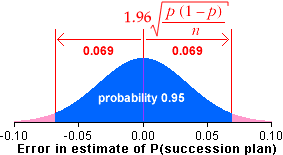

95% bounds on the estimation error
When estimating a population proportion, π, with the sample proportion in a large sample, the estimation error is approximately normally distributed and the standard error is

There is therefore approximately 95% probability that the error will be between
| -1.96 | and 1.96 |
Note that the actual error distribution is only approximately normal.
If the sample size, n , is small, the probability that the error is within these bounds may be different from 0.95.
Management succession plans
An earlier example described whether a sample of 210 chief executives of fast-growing small companies had management succession plans to deal with the consequences of executives resigning.
| Management succession plan? | Frequency |
|---|---|
| Yes | 107 |
| No | 103 |
| Total | 210 |
The proportion of companies with management succession plans was p = 107/210 = 0.510 and this provides a point estimate of the probability, π, that other similar companies will have such plans.
The diagram below shows our estimated normal distribution for the errors and approximate 95% bounds on the error.

95% confidence interval
Since there is a probability of approximately 0.95 that p is within 1.96 of π,
a 95% confidence interval for π is...
of π,
a 95% confidence interval for π is...
| p ± 1.96 |
A 95% confidence interval for the population proportion of small fast-growing companies with management succession plans is therefore
0.510 ± 0.069
i.e. 0.441 to 0.579
We are therefore 95% confident that between 44% and 58% of small fast-growing companies have management succession plans.